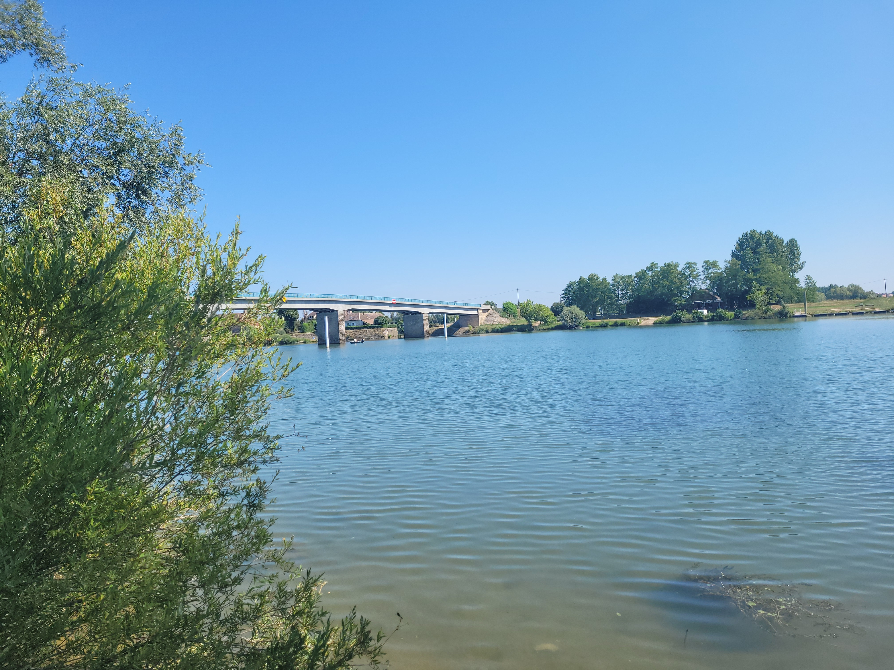

<!--Main layout-->
<main class="vennbahngrijs">
    <div class="container">
  
        <div class="row">
            <div class="col-md-12 pt-5">
                <h2>Beaune - Charentay</h2>
                <h5>Etappe 7 - 130 KM</h5>
            </div>
        </div>
  
        <div class="row">
            <div class="col-md-6">
                <div class="row">
                    <div class="col-md-12 pt-5">
                      <h4>De route</h4>
                        De route is van Beaune naar Charentay. Eerst verlaat je Beaune via het zuiden. 
                        Hierbij fiets je langs de bekende wijn streek van Beaune. Na 55 kilometer kom je aan in het plaatsje
                        Chalon-sur-Saône. In dit plaatsje kom je weer op de route langs.<br><br>

                        Tot aan het dorpje Saint-Germain-du-Plain lijkt dit stuk net op Vennbahn.
                        Na Saint-Germain-du-Plain steek je de rivier over en fiets je langs de rivier
                        naar Tournus en Mâcon. <br> <br>

                        Als je de rivier verder zuidelijk volgt kom je uit eindeijk bij het plaatsje Belleville terecht.<br>
                        Belleville kan je als het eind-punt van deze route zien. Ons prachtige hotel lag namelijk op 3 km van Belleville. 

                     
  
  
                    </div>
                </div>
            </div>
            <div class="col-md-6 pt-5">
                    
            </div>
        </div>
  
        <div class="row">
            <div class="col-md-12 pt-5">
               <h4>Waar moet je op letten</h4>
               
  
  
            </div>
  
        </div>
  
  
  
        <iframe src="https://www.google.com/maps/embed?pb=!1m36!1m12!1m3!1d19162.640267899424!2d4.7004295392139115!3d46.081993173303694!2m3!1f0!2f0!3f0!3m2!1i1024!2i768!4f13.1!4m21!3e1!4m5!1s0x47f2f344cd583ffb%3A0xba8cf496643eff53!2sBeaune%2C%20Frankrijk!3m2!1d47.02603!2d4.8400039999999995!4m3!3m2!1d46.6677641!2d4.9479272!4m5!1s0x47f37d79c7b1a6e5%3A0x6eede3a93c95e8a9!2sBelleville-en-Beaujolais%2C%20Frankrijk!3m2!1d46.1139082!2d4.7279671!4m3!3m2!1d46.080130399999994!2d4.6998995!5e0!3m2!1snl!2snl!4v1662543681323!5m2!1snl!2snl"
        class="mt-5 mb-5" width="100%" height="600px" allowfullscreen="" loading="lazy" referrerpolicy="no-referrer-when-downgrade">
       </iframe>
  
    </div>
  </main>
  

